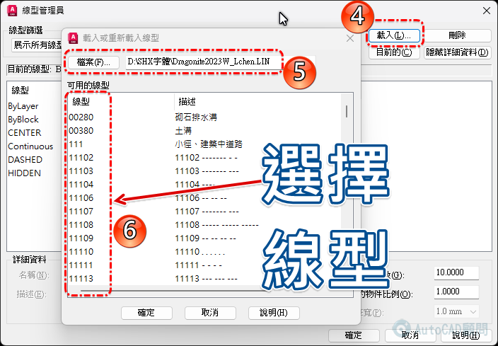

🔍 教你掛入 SHX 造型線型及使用教學
快速掌握 SHX 線型掛載與應用技巧！
Quickly master loading and applying SHX linetypes!
AutoCAD 繪圖風格瞬間升級，輕鬆打造專業圖面！
Instantly upgrade your drawing style and create professional designs with ease!


🪄論壇討論文中有線型下載
https://www.autocad-tw.com/t28979-topic
👇專屬B會員直接下載:
[專屬分享]SHX 造型線型檔下載
https://www.autocad-tw.com/t30168-topic
👇延伸閱讀
[密技]AutoCAD 新增自訂線型(LIN)